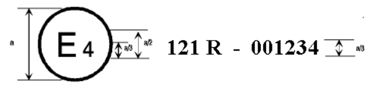
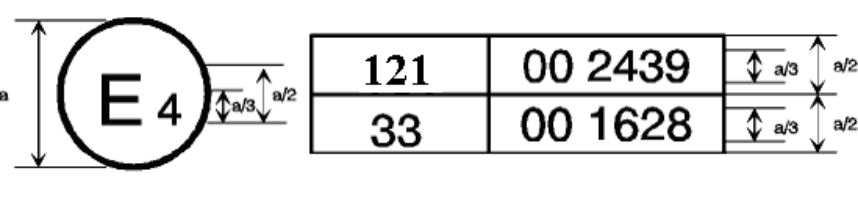

Scope This Regulation applies to vehicles of categories M and N1. It specifies requirements for the location, identification, colour, and illumination of motor vehicle hand controls, tell-tales and indicators. It is designed to ensure the accessibility and visibility of vehicle controls, tell-tales and indicators, and to facilitate their selection under daylight and night-time conditions, in order to reduce the safety hazards caused by the diversion of the driver's attention from the driving task and by mistakes in selecting controls.
2.1「操作装置」とは、車両の状態を変更する手動部分をいう。"Control" means that hand-operated part of a device that enables the driver to▼
English (Original)
"Control" means that hand-operated part of a device that enables the driver to bring about a change in the state or functioning of a vehicle or vehicle’s subsystem
2.5「表示灯」とは、装置の作動や状態を示す光学信号をいう。"Tell-tale" means an optical signal that, when alight, indicates the actuation▼
English (Original)
"Tell-tale" means an optical signal that, when alight, indicates the actuation of a device, a correct or defective functioning or condition, or a failure to function.
日本語訳
「表示灯」とは、点灯時に装置の作動、機能の正常又は欠陥、状態、又は機能不全を示す光学信号をいう。
2.6識別記号と対象物の間に注意散漫源がないこと。"Adjacent" means that no control, tell-tale, indicator, or other potential source▼
English (Original)
"Adjacent" means that no control, tell-tale, indicator, or other potential source of distraction appears between the identifying symbol and the tell-tale, indicator, or control which that symbol identifies.
2.7製造者とは、型式認証と生産適合性に責任を負う者である。"Manufacturer" means the person or body who is responsible to the approval▼
English (Original)
"Manufacturer" means the person or body who is responsible to the approval authority for all aspects of the type approval process and for ensuring conformity of production. It is not essential that the person or body is directly involved in all stages of the construction of the vehicle, system, component or separate technical unit which is the subject of the approval process.
2.8車両型式とは、操作装置等の識別に影響する配置が同一の自動車をいう。"Vehicle type" means motor vehicles, which do not differ in respect of the▼
English (Original)
"Vehicle type" means motor vehicles, which do not differ in respect of the internal arrangements, which may affect the identification of symbols for controls, tell-tales, and indicators and operation of controls.
2.9車両の認証とは、操作装置等の設置方法やデザインに関する認証をいう。"Approval of a vehicle" means the approval of a vehicle type with regard to▼
English (Original)
"Approval of a vehicle" means the approval of a vehicle type with regard to the mode of installation, graphical design, legibility, colour, and brightness of controls, tell-tales, and indicators.
3.1認証申請は製造者またはその代理人が提出しなければならない。The application for approval of a vehicle type with regard to the specification▼
English (Original)
The application for approval of a vehicle type with regard to the specification for controls, tell-tales and indicators shall be submitted by the manufacturer or his duly accredited representative.
3.2申請には以下の書類と詳細を3部添付すること。It shall be accompanied by the following documents and particulars in▼
English (Original)
It shall be accompanied by the following documents and particulars in triplicate:
日本語訳
当該申請には、以下の書類及び詳細を3部添付しなければならない。
3.2.1車両型式の記述が必要である。A description of the vehicle type;▼
English (Original)
A description of the vehicle type;
日本語訳
車両型式の記述。
3.2.2本規則の表1に規定された品目のリストが必要である。A list of items specified by this Regulation in Table 1 and prescribed by the▼
English (Original)
A list of items specified by this Regulation in Table 1 and prescribed by the manufacturer for the vehicle as controls, tell-tales or indicators;
日本語訳
本規則の表1に規定され、製造者が当該車両の操作装置、表示灯又は表示器として定めた品目のリスト。
3.2.3記号の図形デザインが必要である。Graphical design of symbols identifying controls, tell-tales and indicators;▼
English (Original)
Graphical design of symbols identifying controls, tell-tales and indicators; and
日本語訳
操作装置、表示灯及び表示器を識別する記号の図形デザイン。
3.2.4操作装置等の配置を示す図面または写真が必要である。Drawings and/or photographs showing the layout of controls and location of▼
English (Original)
Drawings and/or photographs showing the layout of controls and location of tell-tales and indicators in the vehicle;
日本語訳
車両内の操作装置の配置及び表示灯と表示器の位置を示す図面及び／又は写真。
3.3承認評価のため、完全な操作装置等を備えた車両を技術機関に提出しなければならない。A vehicle or representative part thereof fitted with a complete set of controls,▼
English (Original)
A vehicle or representative part thereof fitted with a complete set of controls, tell-tales and indicators, as prescribed in paragraph 3.2.2. above, representing the vehicle type to be approved shall be submitted to the technical service responsible for conducting approval evaluation.
4.1本規則の要件を満たす車両型式は承認される。If the vehicle type submitted for approval pursuant to this Regulation meets▼
English (Original)
If the vehicle type submitted for approval pursuant to this Regulation meets the requirements of the Regulation, approval of that vehicle type shall be granted.
4.2承認された型式には承認番号が割り当てられ、他の型式に再利用してはならない。An approval number shall be assigned to each type approved. Its first two▼
English (Original)
An approval number shall be assigned to each type approved. Its first two digits (at present 00 for the Regulation in its original form) shall indicate the series of amendments incorporating the most recent major technical amendments made to the Regulation at the time of issue of the approval. The same Contracting Party shall not assign this number to another vehicle type or to the same vehicle type submitted with equipment not specified in the list referred to in paragraph 3.2.2. above, subject to the provisions of paragraph 6. of this Regulation.
4.3車両型式の承認等の通知は、附属書1の様式で締約国に伝達されなければならない。Notice of approval or of extension or refusal of approval or production▼
English (Original)
Notice of approval or of extension or refusal of approval or production definitely discontinued of a vehicle type/part pursuant to this Regulation shall be communicated to the Parties to the 1958 Agreement applying this Regulation, by means of a form conforming to the model in Annex 1 to this Regulation.
4.4承認された車両には、指定された場所に国際承認マークを貼付しなければならない。An international approval mark shall be affixed, conspicuously and in a▼
English (Original)
An international approval mark shall be affixed, conspicuously and in a readily accessible place specified on the approval form, to every vehicle conforming to a vehicle type approved under this Regulation. Such international approval mark shall consist of: 5
4.5複数の規則で承認された場合、承認記号は繰り返さず、縦列に配置することができる。If the vehicle conforms to a vehicle type approved, under one or more other▼
English (Original)
If the vehicle conforms to a vehicle type approved, under one or more other Regulations annexed to the Agreement, in the country which has granted approval under this Regulation, the symbol prescribed in paragraph 4.4.1. need not be repeated; in such a case the Regulation and approval numbers and the additional symbols of all the Regulations under which approval has been granted in the country which has granted approval under this Regulation shall be placed in vertical columns to the right of the symbol prescribed in paragraph 4.4.1.
4.6承認マークは明確に判読でき、消去不能でなければならない。The approval mark shall be clearly legible and be indelible.▼
English (Original)
The approval mark shall be clearly legible and be indelible.
日本語訳
承認マークは、明確に判読可能であり、かつ消去不能でなければならない。
4.7承認マークは車両データプレートの近くに配置されなければならない。The approval mark shall be placed close to or on the vehicle data plate▼
English (Original)
The approval mark shall be placed close to or on the vehicle data plate affixed by the manufacturer.
日本語訳
承認マークは、製造業者によって貼付された車両データプレートの近く又は上に配置されなければならない。
4.8認可マークの配置例は附属書2に示される。Annex 2 to this Regulation gives examples of arrangements of approval▼
English (Original)
Annex 2 to this Regulation gives examples of arrangements of approval marks.
日本語訳
本規則の附属書2は、認可マークの配置例を示す。
5仕様Specifications
5操作装置等は本規則の要件を満たすこと。Specifications▼
English (Original)
Specifications A vehicle fitted with a control, a tell-tale or an indicator, listed in Table 1, shall meet the prescribed requirements of this Regulation for the location, identification, colour, and illumination of such control, tell-tale or indicator.
5.1.1運転操作装置は運転者が操作できるように配置されなければならない。The controls to be used by a driver while driving the vehicle shall be located▼
English (Original)
The controls to be used by a driver while driving the vehicle shall be located so that they are operable by this driver under the conditions of paragraph 5.6.2.
5.1.2表示灯と指示装置は昼夜問わず運転者に見え認識できる必要がある。The tell-tales and indicators, shall be located so that they are visible and▼
English (Original)
The tell-tales and indicators, shall be located so that they are visible and recognizable to a driver during night and day under the conditions of paragraphs 5.6.1. and 5.6.2. Tell-tales and indicators need not be visible or recognisable when not activated.
5.1.3識別表示は表示灯、指示装置、操作装置の上または隣接して配置する。The identifications of tell-tales, indicators and controls shall be placed on or▼
English (Original)
The identifications of tell-tales, indicators and controls shall be placed on or adjacent to the tell-tales, indicators and controls that they identify. In the case of multifunction control, the identifications need not be immediately adjacent. Nonetheless, they shall be as close as practicable to such multifunction control.
5.1.4助手席エアバッグオフ表示灯は特定の場所に配置されなければならない。Notwithstanding paragraphs 5.1.1., 5.1.2. and 5.1.3. the tell-tale for▼
English (Original)
Notwithstanding paragraphs 5.1.1., 5.1.2. and 5.1.3. the tell-tale for "passenger air bag off", if fitted, must be located within the interior of the vehicle and forward of and above the design H-point of both the driver's and the front passenger(s)' seat in their forward most seating positions. The tell- tale which alerts front seat occupants that the passenger air bag is switched
5.2.1操作装置、表示灯、指示装置は表1の記号で識別されなければならない。Where fitted, the controls, tell-tales and indicators, listed under the heading▼
English (Original)
Where fitted, the controls, tell-tales and indicators, listed under the heading column 3 of Table 1, shall be identified by symbols designated for them in column 2 of Table 1. This requirement does not apply to the horn (an audible warning signal) control, when it is activated by a narrow ring-type control or by a lanyard. If a symbol is used for identifying a control, tell-tale or indicator not listed in Table 1, it is recommended to use a symbol designated for the purpose in standard ISO 2575:2004 where one exists and where that symbol is suitable for the application concerned.
5.2.2未掲載の記号は製造業者が考案でき、ISO 2575:2004に従う。To identify a control, a tell-tale or an indicator not included in Table 1▼
English (Original)
To identify a control, a tell-tale or an indicator not included in Table 1 or ISO 2575:2004, the manufacturer may use a symbol of its own conception. Such symbol may include internationally recognized alphabetic or numeric indications. All symbols used shall follow the design principles laid down in paragraph 4. of ISO 2575:2004.
5.2.6警報表示灯等の識別表示は運転者に対し視覚的に直立して見えるようにしなければならない。Except as provided in paragraph 5.2.7., all identifications of tell-tales,▼
English (Original)
Except as provided in paragraph 5.2.7., all identifications of tell-tales, indicators and controls listed in Table 1 or ISO 2575:2004 must appear to the driver perceptually upright. In case of rotating control, this paragraph applies to it when such control is in its "off" position.
5.2.7以下の識別表示は視覚的に直立である必要はない。The identification of the following need not appear to the driver perceptually▼
English (Original)
The identification of the following need not appear to the driver perceptually upright:
日本語訳
以下の識別表示は、運転者に対し視覚的に直立して見える必要はない。
5.2.7.1警音器操作装置は直立である必要はない。A horn control,▼
English (Original)
A horn control,
日本語訳
警音器操作装置
5.2.7.2操舵輪上の操作装置等は直立である必要はない。Any control, tell-tale or indicator located on the steering wheel, when the▼
English (Original)
Any control, tell-tale or indicator located on the steering wheel, when the steering wheel is positioned for the motor vehicle to travel in other than a straight forward direction, and
5.2.7.3オフ位置のない回転式操作装置は直立である必要はない。Any rotating control that does not have an off position.▼
English (Original)
Any rotating control that does not have an off position.
日本語訳
オフ位置を持たないいかなる回転式操作装置
5.2.8自動車両速度システム等の各操作装置は識別表示を備えなければならない。Each control for the automatic vehicle speed system (cruise control) and each▼
English (Original)
Each control for the automatic vehicle speed system (cruise control) and each control for heating and air conditioning system(s) shall have identification provided for each function of each such system.
5.2.9連続調整操作装置は調整範囲の限界を識別表示しなければならない。When fitted each control that regulates a system function over a continuous▼
English (Original)
When fitted each control that regulates a system function over a continuous range shall have identification provided for the limits of the adjustment range of any such function. If colour coding is used to identify the limits of the adjustment range of a temperature function, the hot limit shall be identified by the colour red and the cold limit by the colour blue. If the status or limit of a function is shown by an indicator separated from and not adjacent to the control for that function, both the control and the indicator must be independently identified in compliance with paragraph 5.1.3. 7
5.3.1操作装置の識別表示は車幅灯作動時に照明可能とする。The identifications of controls for which the word "Yes" is indicated in▼
English (Original)
The identifications of controls for which the word "Yes" is indicated in column 4 of Table 1 shall be capable of being illuminated whenever the position lamps are activated. This does not apply to controls located on the floor, floor console, steering wheel, or steering column, or in the area of windscreen header, or to controls for a heating and air-conditioning system if the system does not direct air directly upon the windscreen.
5.3.2表示装置の識別表示はエンジン作動可能かつ車幅灯作動時に照明する。The indicators and their identifications for which the word "Yes" is indicated▼
English (Original)
The indicators and their identifications for which the word "Yes" is indicated in column 4 of Table 1 shall be illuminated whenever the device which starts and/or stops the engine is in a position which makes it possible for the engine to operate and the position lamps are activated.
5.3.3前照灯点滅時や昼間走行灯作動時は照明不要である。The indicators, their identifications and the identifications of controls need▼
English (Original)
The indicators, their identifications and the identifications of controls need not be illuminated when the headlamps are being flashed or operated as daytime running lamps.
5.3.5警報表示灯は故障識別時または電球チェック時以外は発光してはならない。A tell-tale shall not emit light except when identifying the malfunction or▼
English (Original)
A tell-tale shall not emit light except when identifying the malfunction or vehicle condition for whose indication it is designed or during a bulb check.
5.3.6警報表示灯はあらゆる運転条件下で視認可能とする。Brightness of Tell-Tale Illumination▼
English (Original)
Brightness of Tell-Tale Illumination Means shall be provided for making tell-tales and their identification visible and recognisable to the driver under all driving conditions.
5.4.1警報表示灯の色は表1の第5欄に従う。Light of each tell-tale listed in Table 1 shall be of the colour shown in▼
English (Original)
Light of each tell-tale listed in Table 1 shall be of the colour shown in column 5 of this table.
日本語訳
表1に記載されている各警報表示灯の光は、この表の第5欄に示されている色でなければならない。
5.4.1.1脚注18の記号はISO 2575:2004に従い他の色で表示可能である。Nevertheless if already fitted on the vehicle as specified in Table 1 with the▼
English (Original)
Nevertheless if already fitted on the vehicle as specified in Table 1 with the colour specification of column 5, each symbol with the footnote18 may be shown in other colours, in order to convey different meanings, according to the general colour coding as proposed in paragraph 5. of standard ISO 2575:2004.
5.4.2表1外の表示装置等の色は、表1の識別を妨げずISO 2575:2004に従う。Indicators and tell-tales and identifications of indicators and controls not▼
English (Original)
Indicators and tell-tales and identifications of indicators and controls not listed in Table 1 may be of any colour chosen by the manufacturer, however, such colour must not interfere with or mask the identification of any tell-tale, control, or indicator specified in Table 1. The colour to be selected shall follow the guidelines specified in paragraph 5 of standard ISO 2575:2004.
5.5.1.4特定の表示灯が共通スペースに表示される場合、他の記号を置き換えること。If tell-tale for the brake system malfunction, headlamp driving beam,▼
English (Original)
If tell-tale for the brake system malfunction, headlamp driving beam, direction indicator or seat belt is displayed in a common space it must displace any other symbol in such common space if the underlying condition exists for its activation.
5.5.1.5一部の表示灯を除き、情報は自動または運転者により解除可能である。With the exception of tell-tales for the brake system malfunction, headlamp▼
English (Original)
With the exception of tell-tales for the brake system malfunction, headlamp driving beam, direction indicator or seat belt, the information may be cancellable automatically or by the driver.
5.6.1運転者は周囲の光条件に適応していること。The driver has adapted to the ambient light conditions.▼
English (Original)
The driver has adapted to the ambient light conditions.
日本語訳
運転者は周囲の光条件に適応していること。
5.6.2運転者は衝突保護システムで拘束され、その制約内で自由に動けること。The driver is restrained by the installed crash protection system, adjusted in▼
English (Original)
The driver is restrained by the installed crash protection system, adjusted in accordance with the manufacturer's instructions, and is free to move within constraints of that system.
6車両型式の変更等Modifications of the vehicle type or of any aspect of specification for
6車両型式等の変更と認可の延長。Modifications of the vehicle type or of any aspect of▼
English (Original)
Modifications of the vehicle type or of any aspect of specification for controls, tell-tales and indicators and extension of approval
日本語訳
車両型式又は操作装置、表示灯及び指示装置の仕様のあらゆる側面における変更及び認可の延長
6.1車両型式等の変更は型式承認当局に通知し、当局は対応を決定する。Every modification of the vehicle type, or of any aspect of specification for▼
English (Original)
Every modification of the vehicle type, or of any aspect of specification for controls, tell-tales and indicators, or of the list referred to in paragraph 3.2.2. above, shall be notified to the Type Approval Authority which approved that vehicle type. The department may then either:
6.1.1変更が悪影響なく要件を満たすと判断すること。Consider that the modifications made are unlikely to have an appreciable▼
English (Original)
Consider that the modifications made are unlikely to have an appreciable adverse effect and that in any case the vehicle still meets the requirements; or
6.1.2評価実施機関にさらなる評価報告書を要求すること。Require a further evaluation report from the technical services responsible for▼
English (Original)
Require a further evaluation report from the technical services responsible for conducting the evaluation.
日本語訳
評価の実施を担当する技術機関に対し、さらなる評価報告書を要求すること。
6.2承認の確認または拒否は、規定の手続きで締約国に通知しなければならない。Confirmation or refusal of approval, specifying the alterations, shall be▼
English (Original)
Confirmation or refusal of approval, specifying the alterations, shall be communicated by the procedure specified in paragraph 4.3. above to the Parties to the Agreement applying this Regulation.
6.3承認延長当局は、各連絡様式に番号を付与し、締約国に通知しなければならない。The competent authority issuing the extension of approval shall assign a▼
English (Original)
The competent authority issuing the extension of approval shall assign a series number to each communication form drawn up for such an extension and inform thereof the other Parties to the 1958 Agreement applying this Regulation by means of a communication form conforming to the model in Annex 1 to this Regulation. 9
Conformity of production The conformity of production procedures shall comply with those set out in the Agreement, Appendix 2 (E/ECE/324-E/ECE/TRANS/505/Rev.2) with the following requirements:
7.1認可車両は、認可型式に適合するよう製造しなければならない。A vehicle approved to this Regulation shall be so manufactured as to conform▼
English (Original)
A vehicle approved to this Regulation shall be so manufactured as to conform to the type approved by meeting the requirements set forth in paragraph 5. above.
7.2型式認可当局は、適合性管理方法を2年ごとに検証できる。The authority which has granted type approval may at any time verify the▼
English (Original)
The authority which has granted type approval may at any time verify the conformity control methods applied in each production facility. The normal frequency of these verifications shall be once every two years.
8生産不適合の罰則Penalties for Non-Conformity of Production
8生産不適合に対する罰則。Penalties for non-conformity of production▼
English (Original)
Penalties for non-conformity of production
日本語訳
生産不適合に対する罰則
8.1認可は、要件不遵守または型式不適合の場合に取り消すことができる。The approval granted in respect of a type of vehicle pursuant to this▼
English (Original)
The approval granted in respect of a type of vehicle pursuant to this Regulation may be withdrawn if the requirements are not complied with or if a vehicle bearing the approval mark does not conform to the type approved.
8.2認可取り消し国は、他の締約国に直ちに通知しなければならない。If a Party to the Agreement applying this Regulation withdraws an approval it▼
English (Original)
If a Party to the Agreement applying this Regulation withdraws an approval it has previously granted, it shall forthwith so notify the other Contracting Parties applying this Regulation by means of a communication form conforming to the example in Annex 1 to this Regulation.
Production definitely discontinued If the holder of the approval completely ceases to manufacture a type of vehicle approved in accordance with this Regulation, he shall inform the authority, which granted the approval. Upon receiving the relevant communication, that authority shall inform thereof the other Parties to the Agreement applying this Regulation by means of a communication form conforming to the example in Annex 1 to this Regulation.
10技術機関および型式認証機関Names and addresses of technical services responsible for conducting
10認可試験機関と型式認可当局の名称・住所を国連事務局に通知する必要がある。Names and addresses of technical services▼
English (Original)
Names and addresses of technical services responsible for conducting approval tests and of Type Approval Authorities The Parties to the 1958 Agreement applying this Regulation shall communicate to the United Nations Secretariat the names and addresses of the technical services responsible for conducting approval tests and of the Type Approval Authorities which grant approval and to which forms certifying approval or extension or refusal or withdrawal of approval, issued in other countries, are to be sent. 10
11.1発効後、締約国はECE認可拒否や販売禁止をしてはならない。As from the date of entry into force of this Regulation, Contracting Parties▼
English (Original)
As from the date of entry into force of this Regulation, Contracting Parties applying this Regulation shall not: (a) Refuse to grant ECE approval for a vehicle type under this Regulation, (b) Prohibit the sale or entry into service of a type of vehicle with regard to the specification for controls, tell-tales and indicators, if the vehicle type complies with the requirements of this Regulation.
11.2発効後2年間は、国内認可を拒否してはならない。Until 2 years after entry into force of this Regulation, Contracting Parties▼
English (Original)
Until 2 years after entry into force of this Regulation, Contracting Parties applying this Regulation shall not refuse to grant national approval of a vehicle type with regard to the specification for controls, tell-tales and indicators if the vehicle type does not comply with the requirements of this Regulation.
1記号の枠付き部分は塗りつぶし可能である。Framed areas of the symbol may be solid.▼
English (Original)
Framed areas of the symbol may be solid.
日本語訳
記号の枠付き部分は、塗りつぶされていてもよい。
2定義Definitions
2記号はISO 2575:2004と同一で、比例寸法特性を維持する必要がある。The symbols included in this Regulation are substantially identical to symbols described in▼
English (Original)
The symbols included in this Regulation are substantially identical to symbols described in ISO 2575:2004. Proportional dimensional characteristics specified in ISO 2575:2004 shall be maintained.
3一対の矢印は単一記号だが、左右独立作動時は別記号とみなせる。The pair of arrows is a single symbol. When the controls or tell-tales for left and right turn▼
English (Original)
The pair of arrows is a single symbol. When the controls or tell-tales for left and right turn operate independently, however, the two arrows may be considered separate symbols and be spaced accordingly.
8生産不適合の罰則Penalties for Non-Conformity of Production
8発効日時点でテキスト使用を許可していた締約国は、60ヶ月間テキスト使用を継続できる。Contracting Parties which, at the date of coming into force of this Regulation, allowed or▼
English (Original)
Contracting Parties which, at the date of coming into force of this Regulation, allowed or required the use of text for this function may, until sixty months after the date of coming into force of this Regulation, continue to allow or require the text in addition to the prescribed symbols for vehicles to be registered in their country.
10技術機関および型式認証機関Names and addresses of technical services responsible for conducting
10「D」は製造者が選んだ英数字・記号で置き換え・補足できる。Letter "D" may be replaced or supplemented by other alphanumeric character(s) or symbol(s)▼
English (Original)
Letter "D" may be replaced or supplemented by other alphanumeric character(s) or symbol(s) chosen by the manufacturer to indicate additional selection modes..
17車両輪郭は推奨であり、実際の車両に合わせ代替輪郭も使用できる。The vehicle outline shown is not intended to be restrictive, but is the recommended outline.▼
English (Original)
The vehicle outline shown is not intended to be restrictive, but is the recommended outline. Alternative vehicle outlines may be used in order to better represent the actual outline of a given vehicle.
18記号は、ISO規格の色分けに従い、異なる意味を伝えるため指定色以外でも表示できる。Symbol may be shown in other colours than specified in column 5 in order to convey different▼
English (Original)
Symbol may be shown in other colours than specified in column 5 in order to convey different meanings according to the general colour coding as proposed in paragraph 5. of standard ISO.
19始動・停止機能は統合可能で、記号の代わりに文字も使用できる。The functions "start" and "stop" may be combined in one control. As an alternative to the▼
English (Original)
The functions "start" and "stop" may be combined in one control. As an alternative to the prescribed symbol(s) it is allowed to use the text "START" and/or "STOP" or a combination of symbols and text. Text can be displayed in uppercase and/or lowercase letters. 16
4該当する場合、製造業者代理人の名称と住所を記載すること。If applicable, name and address of the manufacturer's representative:▼
English (Original)
If applicable, name and address of the manufacturer's representative: ......................................................................................................................................
6承認試験を担当する技術機関を記載すること。Technical service responsible for conducting approval tests:▼
English (Original)
Technical service responsible for conducting approval tests: ......................................................................................................................................
17承認番号付き文書は請求により入手可能。The following documents, bearing the approval number shown above, are available▼
English (Original)
The following documents, bearing the approval number shown above, are available on request:..................................................................................................................... ...................................................................................................................................... ...................................................................................................................................... 18
日本語訳
上記の承認番号を付した以下の文書は、請求に応じて入手することができる。
附属書 2認可マークの配置Arrangements of approval marks
認可マークのモデルA配置を示す。Annex 2 Arrangements of approval marks Model A (See paragraph 4.4. of this Regul▼
English (Original)
Annex 2 Arrangements of approval marks Model A (See paragraph 4.4. of this Regulation)
日本語訳
附属書2 認可マークの配置 モデルA（本規則4.4項参照）
参照段落
Figure 4

Figure 5

1この番号は単なる例示である。The number is given merely as an example.▼
English (Original)
The number is given merely as an example. ________________ 19